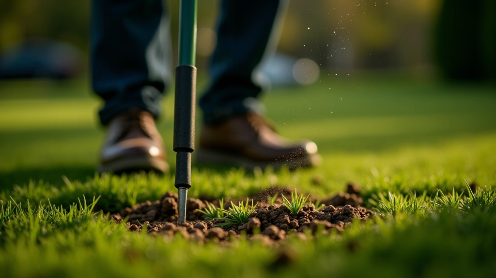
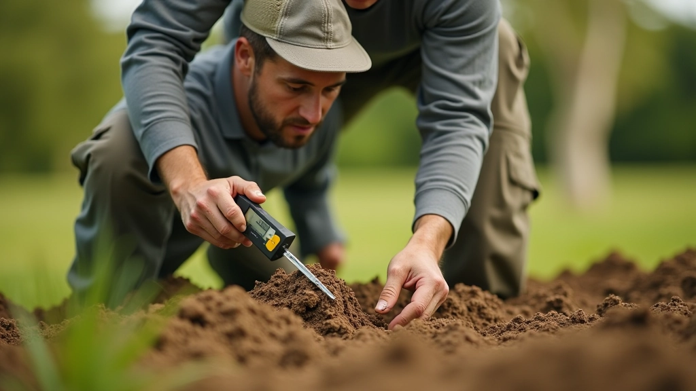
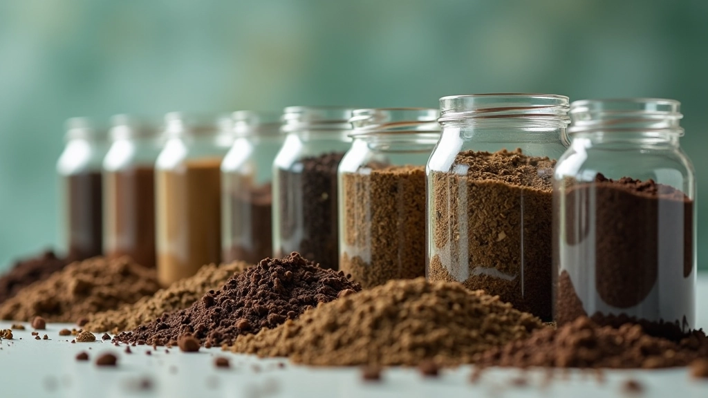
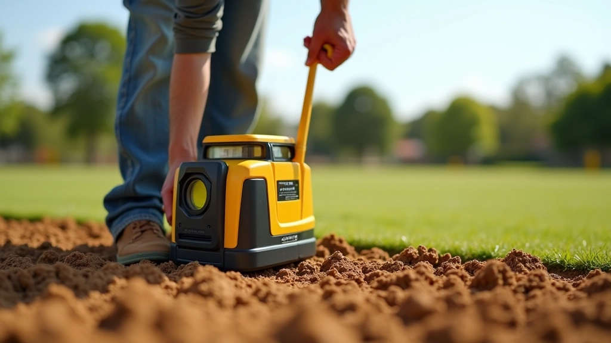

اختيار وزراعة العشب: من البذور إلى الملعب الأخضر
أصناف العشب المختلفة لها متطلبات مختلفة. نشرح كيفية اختيار الصنف المناسب لمناخك وكيفية الزراعة بشكل صحيح.
اقرأ المقالفهم خصائص التربة واختبارها ضروري. نتناول كيفية قراءة نتائج التحليل واستخدامها لتحضير الأساس المثالي.

قبل أن تفكر في نوع العشب أو نظام الري، تحتاج إلى معرفة ما تحتك به. التربة ليست مجرد أوساخ عشوائية — هي نظام حي معقد يؤثر على كل شيء يحدث فوقها. عندما تبني ملعب كروكيه، فإنك تبني على أساس التربة هذا.
التحليل الصحيح يخبرك عن البنية، والملوحة، والمواد العضوية، والصرف. لا تخمّن. لا تفترض. تحليل فقط، وأرقام فقط. هذا هو الفرق بين ملعب يستمر سنوات وملعب يتدهور في موسم واحد.

الخطوات العملية من جمع العينات إلى الحصول على النتائج
لا تأخذ عينة واحدة فقط من منطقة الملعب. تحتاج إلى ١٢-١٥ عينة من أعماق مختلفة. من السطح إلى ٣٠ سم تحته. اخلط العينات معاً في دلو نظيف ثم اختر حوالي ١ كيلوغرام للاختبار.
لا تستخدم الفرن — قد يدمر المعادن الموجودة فيها. جفف العينة في الهواء لعدة أيام أو استخدم جهاز تجفيف متخصص. هذا يؤثر على النتائج بشكل كبير جداً.
تأكد أن المختبر معتمد ولديه خبرة مع التطبيقات الرياضية. أخبرهم أنك تعد ملعب كروكيه — فهذا يؤثر على الاختبارات التي سيجرونها.
عندما يصل التقرير، لا تفزع من الأرقام. هناك ثلاثة أشياء رئيسية تحتاج إلى فهمها: النسيج، والحموضة، والصرف.
نسبة الرمل والطين والطمي. ملعب كروكيه مثالي يحتاج إلى توازن جيد. كثير من الطين = تصريف سيء. كثير من الرمل = جاف جداً. النسبة المثالية حوالي 60% رمل، 20% طين، 20% طمي.
تتراوح من 1 إلى 14. الملاعب تحتاج عادة إلى 6.0-7.0 pH. إذا كانت أقل من 6.0، التربة حمضية جداً وتحتاج إلى جير. إذا كانت أكثر من 7.5، قلوية جداً.
كم بسرعة تمتص التربة الماء وتتخلص منه. الملاعب الجيدة تمتص 25-50 ملم من الماء في الساعة الواحدة.
بمجرد معرفتك بخصائص التربة، تبدأ التسوية الفعلية. هذا ليس فقط عن جعل كل شيء مستوياً — بل عن إنشاء درجات ميل صحيحة وضمان الصرف الجيد.
إذا كانت التربة رديئة، قد تحتاج إلى إزالة ٣٠-٤٠ سم وتبديلها بتربة أفضل. نعم، تكلفة. لكن بناء على أساس سيء أكثر تكلفة. تذكر: تفعل هذا مرة واحدة، بشكل صحيح.

هذا المقال للأغراض التعليمية فقط وليس استشارة هندسية أو قانونية. ظروف التربة تختلف من موقع إلى آخر. استشر دائماً متخصصاً محلياً معتمداً قبل البدء في أي عمل على الملعب.
تحليل التربة والتسوية ليست مملة — هي الأساس الذي يحدد نجاح الملعب. تجاهلها يعني مشاكل لاحقة ستكلفك أكثر. استثمر الوقت والمال الآن، واختبر التربة، واقرأ النتائج، وسوّ بشكل صحيح. ملعب كروكيه جيد يبدأ من تحت السطح.